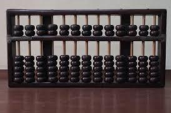
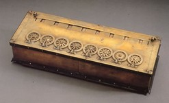
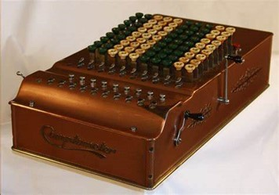

Manusia paling awal mengenali fenomena kuantitas dan menggunakan jari mereka untuk menghitung dan bertindak atas benda-benda material di dunia mereka. Metode sederhana seperti ini akhirnya memberi jalan pada pembuatan perangkat proxy seperti sempoa, yang memungkinkan tindakan pada jumlah item yang lebih tinggi, dan tablet lilin, dimana simbol yang ditekan memungkinkan penyimpanan informasi. Seiring waktu, perangkat baru ini meningkatkan kemampuan untuk menyimpan dan menemukan apa yang sekarang disebut data, untuk berkomunikasi jarak jauh, dan untuk membuat produk informasi yang dikumpulkan dari miliaran elemen yang tak terhitung jumlahnya, semua diubah menjadi format digital yang seragam, contoh alat hitung.
Kata abacus sendiri berasal dari bahasa Yunani ἄβαξ (abax) untuk "lempengan atau papan gambar”. Sempoa yang lebih dikenal sebagai alat bantu dalam perhitungan. Awal mula sebuah komputer terlahir dari benda sederhana ini, yaitu sempoa atau juga disebut abaskus. Jadi sempoa merupakan cikal bakal komputer.
Abacus mulai menghilang dan jarang digunakan lagi sejak kemunculan alat tulis seperti kertas dan pensil. Penemuan mesin komputer lainnya muncul pada sekitar 12 abad kemudian. Kalkulator roda numerik yang dinamakan pascaline (numerical wheel calculator) ditemukan oleh seorang anak muda yang berumur 18 tahun yaitu Blaise Pascal (1623-1662), berkisar pada tahun 1642.
Seorang matematikawan serta filsuf dari Jerman yaitu Gottfred Wilhem von Leibniz (1646-1716) memperbaharui pascaline dengan penemuannya sekitar pada tahun 1694. Leibniz membuat mesin yang bisa digunakan untuk mengalikan. Kemudian, tahun 1820 Charles Xavier Thomas de Colmar membuat kalkulator mekanik fungsi aritmatik dasar yang memiliki empat fungsi yaitu perkalian, pembagiam, penjumlahan, pengurangan. Dimana saat itu digunakan dalam perang dunia ke-1 karena dapat membantu dalam melakukan kalkulasi.
Perkembangan komputer sejak masa Blaise Pascal (1623-1662) dimana Pascal mengembangkan kinerja komputer dari pendahulunya, dengan penemuannya yang membawa 8 jumlah bilangan. Pada tahun 1649 ia di berikan penghargaan Royal Privilege dimana ini adalah hak yang dipergunakan untuk memproduksi dan memperjualkan mesin ciptaannya (kalkulator komputer).
Pada tahun 1652 barulah Pascal memulai produksi alat ciptaannya sebanyak 50 prototipe dimana ia dapat menjual sampai 36 mesin. Bisnis penjualan tersebut tidak semudah yang dipikirkan mengingat pascaline cendrung rumit dalam pengoperasiannya. Pascalinepun hanya dapat menambah dan membagi yang membuat para konsumen tidak menyukainya.
Gottfried W.Leibniz menemukan kalkulator yang dapat bersaing dengan Pascaline. Pada tahun 1652 penemuan tersebut berhenti diproduksi. Leibniz menemukan kalkulator yang dapat bersaing dengan Pascaline. Selama kurang lebih 40 tahun Leibniz memperbaharui design kalkulator Pascaline serta memproduksinya. Mesin hasil penyempurnaan oleh Leibniz dapat dipergunakan dengan mudah dan bebas diperjual belikan.
Seorang Profesor Matematika asal Inggris yaitu Charles Babbage atau lebih dikenal sebagai Bapak komputer adalah gelar dari Charles Babbage. Sebuah komputer yang dapat diprogram merupakan gagasan dari Charles Babbage yang menjadikannya sebagai salah satu tokoh penting dalam dunia komputer.
Charles Babbage menemukan mesin baru sebagai bukti dari gagasannya tersebut. Meskipun pada akhirnya mesin tersebut tidak diselesaikan Charles Babbage dan kini dimuseumkan di Inggris. Pada tahun 1822 Charles Babbage mencoba menggunakan mesin untuk menghitung tabel matematika. Itulah alasan sejarahwan memulai dengan Mesin Analitik yang coba dibangun Charles Babbage pada abad kesembilan belas.
Komputer mengalami perkembangan yang pesat pada 1820, yaitu dimana kalkulator mekanik sudah bisa melakukan 4 operasi dasar aritmatika.
Pada tanggal 29 Februari 1860, Herman Hollerith lahir dan berperan dalam sejarah komputer hingga dia meninggal dunia pada 17 November 1929. Mesin tabulator yang dibuat olehnya menggunakan punched card. Pada prosesnya, dikatakan memiliki kinerja yang sangat cepat dan dapat memproses berjuta-juta data statistik. Data yang didapati oleh Hollerith dapat diletakkan (lubang) ke-sebuah kartu (punched card) yang memiliki lokasi yang sesuai atau lokasi dengan kondisi tertentu. Ide inilah yang menjadi dasar terbuatnya komputer era modern karena kartu ini bisa diurutkan maupun dijumlahkan menggunakan mesin.
Howard berhasil mengembangkan komputer elektronik menggunakan sinyal elektromagnetik. Perkembangan komputer selanjutnya menyusul: Electronic Numerical Integrator and Computer (ENIAC). John W John Presper Eckert (1919-1995) adalah ahli kedua yang berhasil mengembangkan ENIAC.
Komputer terus dikembangkan oleh para ahli. Pada tahun 1940-an, John menemukan mesin yang disebut EDVAC (Electronic Discrete Variable Automatic Computer) yang dapat menyimpan data dan program dalam memori. Inilah awal mula perkembangan CPU yang konon muncul sekitar masa ini.
Teknologi adalah bagian dari kehidupan kita saat ini. Banyak orang yang mengira bahwa komputer hanyalah sebuah alat elektronik biasa, namun seiring berjalannya waktu telah terintegrasi dengan teknologi-teknologi terkait dan mempunyai arti yang sangat luas tergantung dari kebutuhan manusia itu sendiri. Saat ini terdapat berbagai pendapat yang diperdebatkan mengenai dampak positif dan negatif dari perkembangan komputer dan teknologi. Dimana masyarakat tidak bisa menolak kenyataan bahwa teknologi pasti akan membawa dampak negatif dan kesengsaraan bagi penduduk yang ada. Tentu saja, dengan berkembangnya teknologi setiap hari dan semakin memudahkan aktivitas manusia, ketika segala sesuatunya menjadi lebih mudah berkat komputer, niscaya Anda akan merasa asing bahkan kesepian. Dampak teknologi antara lain hilangnya rasa memiliki antar manusia dalam kehidupan nyata. Jika tidak digunakan dengan bijak, banyak dampak negatif yang dapat mempengaruhi fungsi penggunaan ponsel cerdas yang sebenarnya. Berikut beberapa pendapat para ahli :
Pada tahun 1960, beliau menyatakan bahwa teknologi bukan sekedar mesin, melainkan suatu sistem, kendali, proses, dan mekanisme yang dapat memantau perkembangan dari waktu ke waktu. Hal ini menjadikan James sebagai bapak teknologi dalam pendidikan.
Saettler mengatakan bahwa bangsa Yunani kuno mengakui teknologi sebagai pengetahuan yang dapat melakukan kegiatan khusus.
Teknologi dapat mengacu pada artefak material, dari perkakas batu prasejarah hingga pembangkit listrik tenaga nuklir. Teknologi didefinisikan sebagai seperangkat praktik yang digunakan manusia untuk mengubah dunia material, praktik yang terlibat dalam penciptaan dan penggunaan materi.
Inisiatif manusia akan hilang dengan sendirinya dari kehidupan masyarakat. Dengan adanya teknologi sekarang kita tidak perlu menunggu berhari-hari untuk mendapatkan surat, kita dapat menggunakan aplikasi seperti e-mail ataupun melalui jejaring sosial, kita sudah dapat berkomunikasi dengan mudah dan sangat cepat.
Ciri-ciri masyarakat modern yang dikemukakan oleh Talcott Parson, sebagai berikut: